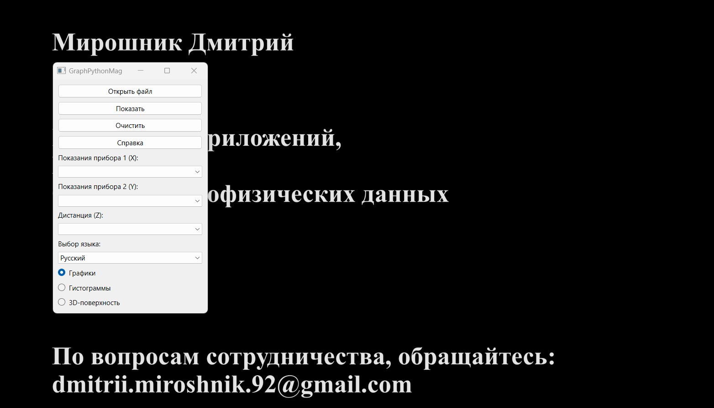
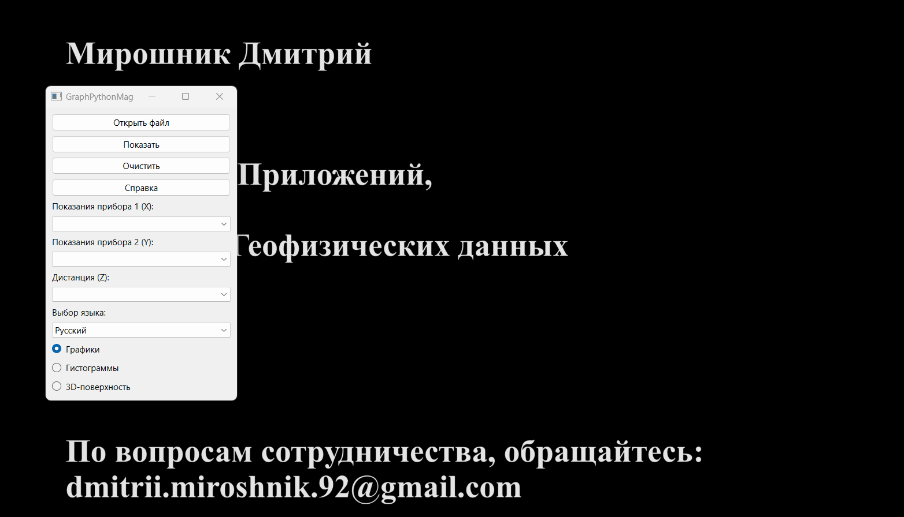

Cet application a été développée pour visualiser différentes données géophysiques.
Il permet de créer des graphiques, des histogrammes et des surfaces 3D de qualité typographique.
Toute donnée numérique au format tabulaire sauvegardée dans un fichier CSV peut être utilisée comme entrée.
Interface du programme
Cliquez sur le bouton "Ouvrir" pour trouver et ouvrir le fichier CSV source.
Utilisez le menu déroulant pour sélectionner les données pertinentes.
Pour effacer les données, cliquez sur le bouton "Effacer".
Pour effectuer des tracés graphiques, cliquez sur le bouton "Afficher".
Pour changer la langue de l'interface, sélectionnez l'une des langues disponibles dans le menu déroulant "Choix de la langue".
En cas de questions, vous pouvez demander de l'aide en cliquant sur le bouton "Aide".

Graphiques
Des graphiques simples sont créés en utilisant la bibliothèque scientifique Matplotlib.
Les types de graphiques suivants sont implémentés dans ce programme :
Graphique simple. Pour tracer un graphique simple, sélectionnez les valeurs d'une des deux colonnes : "Lectures de l'instrument 1" ou "Lectures de l'instrument 2".
Graphique combiné. Pour comparer les lectures de deux instruments, sélectionnez les valeurs de deux colonnes : "Lectures de l'instrument 1" et "Lectures de l'instrument 2".
Graphique en fonction de la distance. Vous pouvez également combiner plusieurs options de graphiques en fonction de la distance. Pour ce faire, sélectionnez la valeur du canal de distance dans le menu déroulant "Distance".
Histogrammes
La bibliothèque Seaborn est utilisée pour créer des histogrammes de distribution normale.
Plusieurs options sont mises en œuvre pour afficher la distribution normale dans ce programme :
Histogramme simple superposé avec une courbe de distribution normale.
Pour tracer, sélectionnez les valeurs d'une des deux colonnes : "Lectures de l'instrument 1" ou "Lectures de l'instrument 2".

Histogrammes combinés. Pour comparer les lectures, sélectionnez les valeurs de deux colonnes : "Lectures de l'instrument 1" et "Lectures de l'instrument 2".
Distribution des valeurs en fonction de la distance. Vous pouvez également combiner plusieurs options d'affichage en fonction de la distance. Pour ce faire, sélectionnez la valeur du canal de distance dans le menu déroulant "Distance".
Travail avec la fenêtre Matplotlib
La fenêtre des graphiques scientifiques Matplotlib permet à l'utilisateur d'effectuer différentes actions telles que :
Glisser;
Échelle;
Afficher la zone de traçage;
Modifier les étiquettes des axes;
Changer de couleur;
Enregistrer le graphique dans le format sélectionné, etc.
Surface 3D
La bibliothèque Plotly est utilisée pour créer des surfaces 3D.
Pour créer une surface, sélectionnez les 3 colonnes : X, Y et Z. !!!Toutes les coordonnées doivent être dans le système rectangulaire!!!
Travail avec la fenêtre de la Surface 3D
La fenêtre de visualisation de la Surface 3D permet à l'utilisateur d'effectuer plusieurs actions, telles que :
Faire glisser;
Échelle;
Tourner;
Lire les données;
Enregistrer l'image dans le format sélectionné, etc.
Intégration avec OasisMontaj
Cette application permet de travailler avec n'importe quel fichier CSV. Cependant, comme ce programme a été commandé par la AO "Yuzhmorgeologia",
examinons le processus d'exportation d'une base de données OasisMontaj vers un fichier CSV.
Les étapes dans l'environnement OasisMontaj sont les suivantes :
Base de données / Exporter / CSV, etc...;
Sélectionnez les paramètres d'enregistrement;
Cliquez sur "Ok".
Réaction
GraphPythonMag v 1.2.1
Auteur : Dmitrii Miroshnik
Développement d'applications
Conception Web
Traitement des données géophysiques
Pour toute question de collaboration : dmitrii.miroshnik.92@gmail.com.
Vous pouvez également remercier l'auteur.
Je serai heureux de votre soutien et de vos retours !